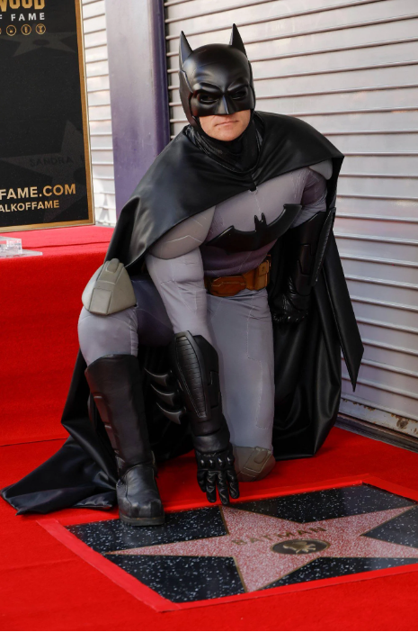

<!DOCTYPE html>
<html lang="en"></html>
<head>
    <meta charset="UTF-8">
    <meta name="viewport" content="width=device-width, initial-scale=1.0">
<link rel="stylesheet" type="text/css" href="style2.css">


    <title>🦇</title>
</head>
<body>
    
    <div class="header">Batman, premier superhéros obtient son étoile sur le Boulevard d'Hollywood🌟</div>
    
    <div class="main-content"><div class="box introduction"><h2> Introduction</h2><p>Batman est l'un des personnages de fiction les plus emblématiques au monde et un super-héros autodidacte, remarquable non pas pour ses super-pouvoirs mais pour son intelligence, sa détermination et son savoir-faire technologique.</p></div>
    <div class="box introduction-bis"><h2>Image</h2><center></center></div>
    <div class="box introduction-ter"><h2>Biographie</h2><p>Bruce Wayne, alias Batman, est un super-héros de fiction appartenant à l'univers de DC Comics. Créé par le dessinateur Bob Kane et le scénariste Bill Finger, il apparaît pour la première fois dans le comic book Detective Comics no 27 en 1939 — mai 1939 comme date sur la couverture mais la date réelle de parution est le 30 mars 1939 — sous le nom de The Bat-Man.</p></div>
    </div>
    
    <a href= "../index.html">Retour au portofolio</a>
    <footer>
        Shine Kalenga
     </footer>
</body>
</html>
